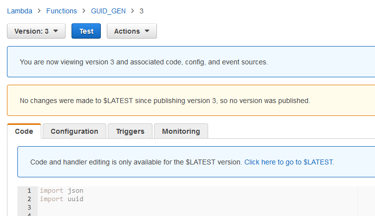
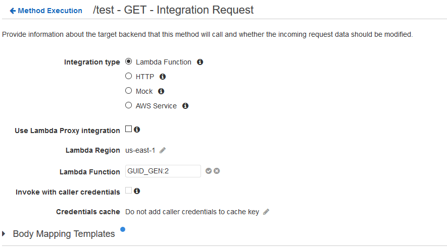
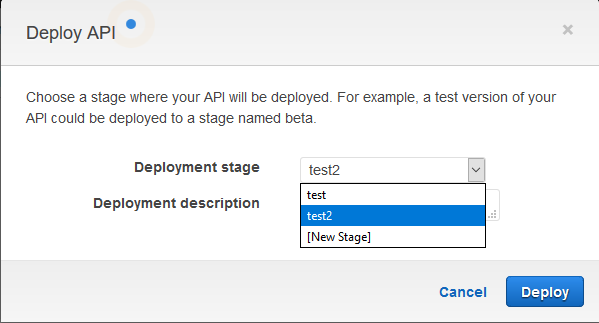

On the action menu select Publish new version a pop up will asking to enter a description of the version.
Press the publish button once you added some useful text to the description.
Once publish you will be sent on the version page of the lambda. Although it says you are now viewing the code of new version it is not the case this is why given a good description of the version is useful to recognize it. Note that the Qualifiers button change to Version: [id]

Switching from one version to another can be done by pressing the “Version : [id]” / “Qualifiers” button and selecting the version id on the versions tab.
Amazon Web Services: Call lambda on API Gateway by its version
Go to the AWS API Gateway console and select your API.
Under resource select the method you want to change lambda version.
Go to the Integration Request.
Click on the Pen next to “Lambda Function” and add “:” + the version id to the function name.
Press the check mark to save the change.
Repeat process for all method you’d like to use lambda function.

Then deploy the api to an existing stage or create a new stage using the action button, Deploy API option.

The method will now call the versioned lambda instead of the latest lambda.


{kind=link}
{kind=link}
{kind=link}